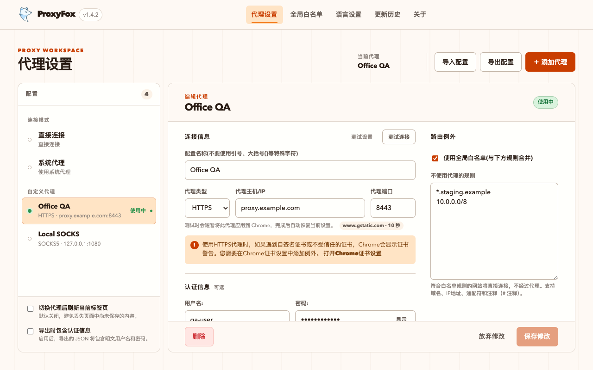

选择可信配置
在 Direct、System 和自定义 HTTP、HTTPS、SOCKS 配置之间切换。
Open source · Local first · Manifest V3
ProxyFox 帮助开发、测试和企业网络用户快速切换自己信任的代理配置。认证请求严格匹配目标，失败的切换自动回滚，配置留在本地。
HTTPS · proxy.example · 8443A predictable switch
ProxyFox 把代理变更当作一次完整事务，而不是点完按钮后只留下一个模糊状态。
在 Direct、System 和自定义 HTTP、HTTPS、SOCKS 配置之间切换。
只有代理主机和端口与当前配置一致时，扩展才响应认证挑战。
Chrome 设置与扩展状态一起更新，避免出现界面显示和真实代理不一致。
保存、切换、删除或导入失败时恢复原有设置，减少网络被留在半成品状态的风险。
The actual product
Popup 用于快速切换，管理页集中处理配置、白名单、连接测试和导入导出。没有账号、订阅或远程控制台。

Built for controlled networks
凭据保存在当前 Chrome 配置文件中，只对严格匹配的代理认证请求使用。
临时应用候选代理，分别显示应用、网络与总耗时，然后自动恢复原设置。
支持域名、通配符、IP、CIDR、IPv6，以及整行和行内注释。
导出默认移除凭据；明确启用后才会把明文认证信息写入 JSON。
使用 Service Worker，兼容 Chrome 114 及更高版本，不加载远程代码。
支持简体中文、繁体中文、英文、日文和韩文界面。
Clear product boundary
明确边界能减少错误安装，也让权限和网络行为更容易判断。
Practical guides
这些指南解释 Chrome 代理工作的边界，而不假设您已经熟悉网络术语。
FAQ
Chrome 商店当前稳定版为 v1.4.1。v1.4.2 候选包已完成本地测试，尚未提交商店更新。
下载 v1.4.2 候选 ZIP · 268,003 bytes · SHA-256 457d0271…55790bd